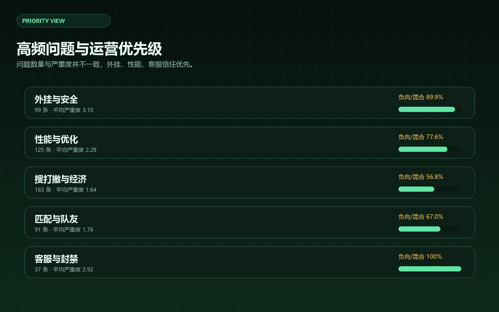
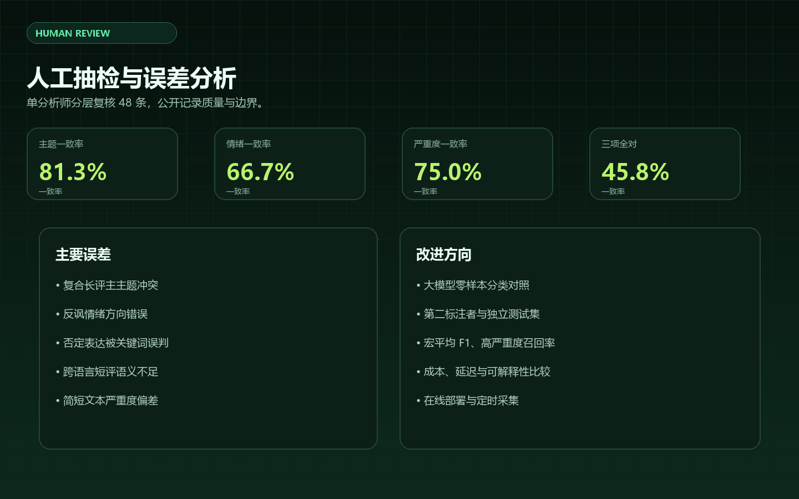

项目目标是验证一条可复用的公开反馈工作流：把分散的平台评论转成匿名化、可比较、可解释的运营线索，而不是只做一次性舆情汇总。
公开采集 → 匿名化 → 清洗去重 → 多语言分类 → 严重度评分 → 人工抽检 → 看板与周报。
AI 用于方案拆解、代码草稿、分类规则、报告初稿和一致性检查；不替代来源判断、隐私边界与最终业务判断。
人工决定来源范围、分类标准、抽检样本与结论边界，并对反讽、否定句、复合长评进行复核。

99 条，89.9% 为负向或混合，平均严重度 3.10。主要集中在透视、自瞄、护航、反作弊和举报处置信任。
125 条，77.6% 为负向或混合，平均严重度 2.28。闪退、崩溃、加载、更新体积和内存问题突出。
183 条，是问题型主题中的最高提及量；但 41% 为正向，说明玩法和收益仍有明显吸引力。
37 条，负向或混合占比 100%，平均严重度 2.92。限制原因、持续时间和申诉响应是重点。
优先处理反作弊与账号安全、闪退与文件损坏、观察期与误封申诉；经济与匹配问题按地图、模式和人群拆解，而不是简单全局调整。

复合长评主主题冲突、反讽情绪、否定表达、跨语言短评和简短文本严重度。
已完成 Copilot 分类对照和 60 条独立 AI 复核；下一步补充真人第二标注者、宏平均 F1、定时采集和 MP4 演示视频。
AI 工作流设计、数据采集与清洗、分类标准、人工验证、交互式看板、运营优先级与合规边界。